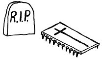

Nascom Journal |
12/82 |
MAN LEBT NUR EINMAL !
Nun ist er von uns gegangen, er, der uns so lange treue Dienste geleistet hat.
Vielleicht ist auch in Ihrem Nascom-1 einmal ein Zeichengenerator „gestorben“? Bei einem IC, das drei Versorgungsspannungen zum richtigen Funktionieren braucht, kann so etwas leicht einmal passieren. Wir können Ihnen helfen, wenn sowas nicht noch einmal vorkommen soll: Durch Ersetzen des Zeichengenerators mit drei Versorgungsspannungen durch ein EPROM, das nur eine braucht. Einfach EPROM in den EPROM-Zeichengenerator-Adapter stecken und diesen dann in die Zeichengeneratorfassung auf dem Nascom einsetzen. Und schon sinkt die „Sterberate“ ganz gewaltig.
Interressant für Leute, die in der Lage sind, EPROMs zu programmieren: Mit dem EPROM-Zeichengenerator-Adapter und einem selbstprogrammierten EPROM können Sie sich leicht einen beliebigen Zeichensatz für Ihren Nascom erzeugen.
EPROM, programmiert als Zeichengenerator:
Preis: 50,– DM
EPROM-Zeichengenerator-Adapter:
Preis: 40,– DM
Zu Beziehen über:
Lampson Analog und Digitaltechnik
Nascom-Vertrieb
___________. __ – __
____ Büttelborn
Dies ist ein Startrek Spiel, das ich vor einiger Zeit mal auf Diskette bekommen hatte und das bei mir mit dem MBASIC-BASCOM läuft. Es ist möglicherweise noch nötig, ein paar Änderungen daran vorzunehmen, aber eigentlich müßte es auf allen MBASICs, deren Versionsnummer mit 4 beginnt ohne weiteres laufen. Mit dem BASIC-80 oder dem Nascom-Microsoft-BASIC also auch. Diejenigen, die schon mal solche Startrek-Spielprogramme ausprobiert haben und dann ziemlich enttäuscht waren sollten das hier trotzdem mal versuchen. Es ist ziemlich aufwendig programmiert und nicht zu vergleichen mit dem, was man so in den üblichen Computerzeitschriften findet. (Ist nicht umsonst so lang). Wer sich die Arbeit mit der Tipperei nicht machen will, kann mir eine Diskette, egal ob 8 Zoll oder 5 1/4 Zoll oder auch eine Kassette zuschicken (bitte Briefmarken oder Geld fürs Rückporto beilegen. ca. 1,50 DM – 2 DM ).
Bevor man richtig mit spielen loslegt, sollte man sich erst mal die Zeit nehmen, um sich mit den Kommandos vertraut zu machen. Ohne die geht nämlich gar nichts. Dazu gibt man zuerst eine 0 ein und Return (oder New-Line). Dann müßte „Computer on Command“ auf dem Bildschirm erscheinen. Dann eine 9 eingeben, und man erhält die Liste der Kommandos. Es ist auch zu empfehlen, sich auch mal den „Warp-Kompass“ ausdrucken zu lassen. Ich habe bei mir jedenfals festgestellt, daß die Richtungen fast immer anders waren, als ich es mir gedacht habe.
Was das überspielen angeht, Kassetten kann ich im Nascom-1 oder Nascom-2 Format mit Nassys-1 bespielen, aber wenn jemand die Möglichkeit hat, sollte er mir doch lieber eine Diskette schicken. Es geht schneller, und die Datensicherheit ist auch größer. Die Diskette muß aber sicher gegen durchbiegen oder sonstige
| Seite 18 von 24 |
|---|